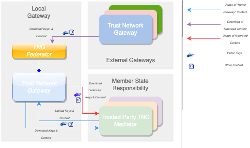

ترجمة آلية — لم يراجعها أي شخص
تُرجمت هذه الصفحة آليًا. لم يراجع أي شخص هذه الترجمة أو يعتمدها، وقد تحتوي على أخطاء. الصفحة بلغة المصدر هي النص المرجعي. اقرأ النص الأصلي (بالإنجليزية)
Machine translation — not reviewed by a person
This page was translated automatically. No person has reviewed or adjudicated this translation, and it may contain errors. The source-language page is the authoritative text. Read the original (English)
المصطلحات
تتضمن هذه المفاهيم والجدول التالي الاختصارات والمصطلحات المستخدمة في هذا المستند.
| المصطلح | الوصف |
|---|---|
| DCC | الشهادة الرقمية لCOVID-19. |
| DDCC | التوثيق الرقمي لشهادة COVID-19. |
| بوابة DCC | تطبيق ويب من نوع REST لتبادل شهادات موقِّع المستندات ومجموعات قيم DCC وقواعد عمل DCC وقوائم الإلغاء لأغراض التحقق من DCC بين الأنظمة الخلفية الوطنية للدول المتصلة. |
| CMS | صيغة الرسائل التشفيرية، وفقًا لـ RFC5652. وتُستخدم هذه الصيغة للتوقيع الرقمي على محتوى الرسائل أيًّا كان أو حساب ملخّصه أو مصادقته أو تشفيره. |
| JRC | مركز البحوث المشترك الأوروبي. |
| OG | بوابة المنشأ. |
| CQL | لغة الجودة السريرية. |
مقدمة
توفّر هذه المواصفة المعمارية الوسائل اللازمة لإنشاء شبكة ثقة اتحادية لاستخدامها مع السجلات الصحية، مثل المواصفات التقنية ووثائق إرشادات التنفيذ الخاصة بالتوثيق الرقمي لشهادات COVID-19 (DDCC) الصادرة عن منظمة الصحة العالمية (WHO). ويستند ذلك إلى افتراض أن المشاركين في شبكة الثقة قد يُنشئون شبكات ثقة وطنية مستقلة خاصة بهم، أو يشاركون في شبكة ثقة إقليمية، أو يرغبون في المشاركة في شبكة ثقة اتحادية عالمية. وفضلًا عن ذلك، قد يرغب المشاركون في شبكة الثقة في أن تكون شبكات الثقة هذه قابلة للتشغيل البيني لحالات الاستخدام المحلية والعابرة للولايات القضائية. وفي حين تقع اعتبارات الحوكمة والسياسات المحددة اللازمة لإنشاء شبكات الثقة القابلة للتشغيل البيني هذه خارج نطاق هذا المستند، فإن المقصود هو أن يدعم التصميم التقني الوارد في هذا المستند سياسات المشاركين في شبكة الثقة داخل الولاية القضائية الواحدة وعبر الولايات القضائية.
صُمِّمت مواصفات بوابة شبكة الثقة (TNG) الواردة في هذا المستند لدعم مواصفة DDCC، التي تعمل بوصفها مواصفة جسرية/جامعة لمختلف السجلات الصحية مثل شهادات COVID الرقمية (مثل DCC الخاصة بالاتحاد الأوروبي EU، وSMART Health Cards، وDIVOC، وICAO). وتبني هذه المواصفة على بوابة الشهادة الرقمية لCOVID التابعة للاتحاد الأوروبي من خلال توسيعها بعدة طرق مهمة:
- مما يتيح الاتحاد وتبادل المعلومات بين بوابات الربط على أساس الند للند؛
- دعم الوصول إلى محتوى البيانات الوصفية (مثل مجموعات القيم/الترميزات وقواعد العمل) مع الالتزام الصريح بمواصفة HL7 FHIR؛
- توفير وسيلة صريحة لإلغاء شهادات COVID الرقمية؛
- مما يتيح الدعم (الاختياري) لسير عمل التحقق والتحقق من الصحة عبر الإنترنت.
ضمن نظام DCC الحالي، تؤدي بوابة الربط المركزية الدور الرئيسي في إرساء الثقة بين جميع المشاركين المتصلين في شبكة الثقة. ويتبع مشغِّلو بوابة الربط عملية موثَّقة توثيقًا جيدًا للتثبت من الهوية وإلحاق مرسى الثقة لكل مشارك في شبكة الثقة. وتبني TNG على هذا النظام لتمكين منظمات أخرى من إنشاء بوابات ثقة، مما يتيح تشكيل شبكة اتحادية من بوابات الثقة تدعم جميع الشهادات الرئيسية لاعتمادات COVID-19.
الطرف الموثوق مقابل النظام الخلفي الوطني
يركّز التصميم الحالي لبوابة الربط على إرساء الثقة بين «الأنظمة الخلفية الوطنية» بمعنى نظام تشغّله/تملكه سلطة صحية وطنية. وقد يكون ذلك نصًا برمجيًا أو حلًا مؤتمتًا بالكامل أو عملية يدوية، قادرة على الاتصال ببوابة الربط على نحو موثوق وعلى تحميل المحتوى وتنزيله. أما الحلول المحددة الأخرى التي تقف خلف ذلك فهي خارج نطاق بوابة الربط نفسها. وفي نطاق DDCC، تُعد صياغة مصطلح «النظام الخلفي الوطني» ضيقة أكثر من اللازم، لأنه قد توجد أطراف أخرى يمكن ربطها بأنظمة النشر الخاصة بها ببوابة ربط في شبكة الثقة. ولذلك ينبغي فهم مصطلح «النظام الخلفي الوطني» في هذا النطاق على أنه «طرف موثوق» بمعنى مشارك حصل على حق الوصول إلى بوابة ربط موثوقة. وتعمل بوابة الربط الموثوقة أو مُنسِّق الاتحاد عندئذٍ أيضًا بوصفه «طرفًا موثوقًا» إزاء بوابات الربط الأخرى.
رؤية تصميم بوابة الربط
تُعد بوابة EU DCC حاليًا نظامًا مركزيًا واحدًا يُرسي الثقة بين المشاركين في DCC ويتيح تبادل قواعد العمل ومجموعات القيم وقوائم الإلغاء. وإذا أنشأت منطقة أخرى من العالم بوابة مماثلة، فلا توجد حاليًا في البنية وسيلة لتبادل هذه البيانات الموثوقة بين البوابتين. وفي هذه البنية الجديدة ضمن سياق DDCC، يمكن ربط بوابات متعددة بعضها ببعض وتبادل البيانات الموثوقة. وعلى المدى الطويل، ستتيح هذه البنية إنشاء مجموعات، وصولًا في نهاية المطاف إلى إقامة اتحاد. وقد تكون هذه البنية قابلة للتطبيق ومحل اهتمام لدى الأطراف غير الرسمية، مثل شركات الطيران، التي ترغب في الحصول على نسخة للقراءة فقط من محتوى بوابة الربط. ويمكن تحقيق ذلك بإلحاق شركة الطيران ببوابة معدَّة خصيصًا لهذا الغرض ومتصلة بالبوابة الرسمية. ولتحقيق هذا الهدف، يجب أن تدعم البنية أوضاع تشغيل متعددة، مثل وضع الأساسي-الثانوي. والتنفيذ الحالي لبوابة EU DCCG هو، كما ذُكر سابقًا، نظام مركزي واحد يعمل بوصفه محورًا لتخزين المعلومات اللازمة المجمَّعة من الأطراف الموثوقة وإدارتها.

ينبغي أن تحقّق TNG هذا التحسين للتنفيذ الحالي لـ DCCG بغرض إنشاء شبكة بين بوابات ربط متعددة لتبادل مواد المفاتيح العمومية المرتبطة بالسجلات الصحية ومجموعات القيم وقواعد العمل بين أطراف مختلفة (رسمية وغير رسمية وتجارية). وفي هذه البنية، يمكن لبوابة الربط الاتصال بأي بوابة ربط أخرى عن طريق التهيئة اليدوية لقائمة الاتصالات وعلاقات الثقة. ولإدارة الاتصالات وسلوك التنزيل الخاص بها، يُستحدث مكوّن جديد هو مُنسِّق الاتحاد. ومُنسِّق الاتحاد خدمة مصغَّرة تعمل بوصفها عميل تنزيل آليًا بين بوابتين وتضطلع بجميع مسؤوليات التبادل الموثوق للبيانات.

يتمثل العمود الفقري لتبادل البيانات هذا في وظائف مكتبة الموصِّل الحالية التي تتصل ببوابة الربط وتوفّر للمستهلك أهم الوظائف اللازمة. وتُعزَّز هذه المكتبة بوظيفة الاتصال ببوابات ربط متعددة بدلًا من بوابة واحدة.
حالات الاستخدام
الانضمام الثنائي
في حالة استخدام الانضمام الثنائي، تتصل مكتبة الموصِّل بوصفها طرفًا موثوقًا ببوابات ربط متعددة لتنزيل المحتوى وتحميله. ويتطلب ذلك الانضمام إلى كلتا البوابتين.

التبادل من نظير إلى نظير
في حالة استخدام التبادل من نظير إلى نظير، تستطيع بوابتان أو أكثر تبادل بياناتها في الاتجاهين. وتُمكِّن البوابة المصدر والبوابة الهدف كلٌّ منهما الأخرى من تنزيل البيانات. وتُلحق جميع البيانات المتبادَلة بالبيانات القائمة داخل بوابة الربط. وقد يشمل ذلك بيانات بوابات أطراف ثالثة، إذا سمح بذلك اتفاق تبادل البيانات بين البوابتين.

التبادل الأساسي-الثانوي
في حالة استخدام التبادل الأساسي-الثانوي، تعمل بوابة أو عدة بوابات بوصفها مصدرًا أساسيًا، وتعمل مجموعة أخرى من البوابات بوصفها مصدرًا ثانويًا. وفي هذا الوضع، تُنزِّل البوابات الثانوية بيانات البوابة الأساسية وتُلحقها بمجموعة بياناتها الخاصة أو تستبدل مجموعة بياناتها بالبيانات المُنزَّلة. وتتجاهل البوابة الأساسية بيانات البوابات الثانوية، التي تعمل مجرد نسخ للقراءة من البوابة الأساسية. ويمكن للأنظمة الخلفية الوطنية الرئيسية الاتصال بالبوابة الأساسية وتحميل البيانات إلى تلك البوابة الأساسية الوحيدة.

تبادل المصادر المدمجة
في حالة استخدام تبادل المصادر المدمجة، تُنزِّل بوابة الربط البيانات من بوابات متعددة وتُلحقها بمجموعة بياناتها الخاصة. وينتج عن ذلك مجموعة مدمجة.

وسيط الثقة
يمكن استخدام محتوى بوابة الربط لإرساء الثقة بين مشاركين لا يربطهم سوى ارتباط فضفاض، مثل أجهزة الجهات المُتحقِّقة المعروفة لدى الطرف الموثوق A، ولكنها غير معروفة مباشرةً لدى الطرف الموثوق B.

لإرساء الثقة بين المشاركين، يمكن إنشاء وسيط ثقة يعتمد على قائمة الثقة الخاصة ببوابة الربط. ويمكن للوسيط بعد ذلك استخدام هذه المعلومات لتقرير ما إذا كان ينبغي إرساء علاقة الثقة أم لا. فعلى سبيل المثال، يمكن للمعترِض التحقق مما إذا كان توقيع رمز JWT قد أُنشئ بالمفتاح العمومي لشهادة وقّعتها سلطة SCA مُلحَقة. وعندما تكون سلطة SCA مُلحَقة وموثوقة، فإن ذلك يُثبت أن التوقيع أجراه طرف يحظى بثقة هذه السلطة SCA. وعندئذٍ تُمنح الثقة لهذا المشارك أيضًا.

لمحة عامة عن البنية
يتمثل الغرض من بوابة شبكة الثقة في تمكين التبادل المؤمَّن والموثوق للبيانات داخل شبكة الثقة.
البيانات المتبادَلة عبر TNG
تبادل البيانات الوصفية
توفّر TNG وسيلة قابلة للتشغيل البيني لتبادل البيانات الوصفية الأساسية دعمًا لشهادات COVID-19 الرقمية باستخدام معايير HL7 FHIR. ويشمل ذلك على وجه الخصوص:
- مجموعات القيم التي ينبغي تبادلها باستخدام المعاملات المحددة في ملف IHE التعريفي لتبادل مجموعات القيم وخرائط المفاهيم (SVCM)، والتي تتضمن الموارد الآتية:
- موارد ValueSet في HL7 FHIR لتبادل الترميزات والمصطلحات المشار إليها في مختلف مواصفات شهادات COVID الرقمية (مثل اللقاحات أو الاختبارات المسموح بها). - يجوز استخدام موارد ConceptMap في HL7 FHIR لتوفير تقابلات بين الترميز المحدَّد على مستوى الولاية القضائية وترميز مواصفة DDCC.
- قواعد العمل التي ينبغي أن تتبع الأداة المعرفية والبنية التحتية لدعم القرار السريري، بما في ذلك الموارد الآتية:
- موارد Library في HL7 FHIR لتبادل مكتبات قواعد العمل المعبَّر عنها بلغة الجودة السريرية (CQL)
- موارد PlanDefinition في HL7 FHIR للإشارة إلى قاعدة العمل التي ينبغي تنفيذها بناءً على حالات الاستخدام ذات الصلة بالتحقق من الصحة أو باستمرارية الرعاية.
لتجريد هذه المتطلبات، ستستحدث بوابة شبكة الثقة وظيفة جديدة تُسمى «المراجع الموثوقة»، تتيح لبوابة الربط تبادل أي نوع من نقاط نهاية الخدمات دون تبادل المحتوى نفسه. ولأغراض التوافق مع الإصدارات السابقة، تبقى وظائف قواعد العمل ومجموعات القيم الخاصة بـ DCC في البنية، ولكن يمكن تهيئتها لتعطيلها باستخدام الملفات التعريفية. وستحل المراجع الموثوقة محل نقاط النهاية الصريحة لقواعد العمل ومجموعات القيم، لأن التباين الواسع في المحتوى الطبي ينبغي أن يُترك لتطبيقات خوادم FHIR بدلًا من تنفيذ كل خدمة في بوابة الربط نفسها.
تبادل المفاتيح العمومية
توفّر TNG وسيلة لتبادل المفاتيح العمومية المستخدمة في التوقيع على شهادات COVID الرقمية، فضلًا عن توفير قوائم بشهادات المفاتيح العمومية الملغاة.
تبادل المراجع
توفّر TNG وظيفة تخزين موارد آمنة وموثوقة (أي مجموعات قيم FHIR أو قواعد العمل) تضمن أن تكون لدى جميع المشاركين في النظام معرفة دقيقة بالمصادر المهمة. ويمكن تخزين هذه المراجع في شكل عناوين URL.
تبادل الجهات المُصدِرة
بالنسبة لبعض أنواع الاعتمادات، مثل الاعتمادات القابلة للتحقق، يلزم TNG لضمان الثقة في الجهات المُصدِرة لتلك الاعتمادات. وتحمل معظم الاعتمادات معرِّفًا للجهة المُصدِرة، مثل عنوان HTTP URL أو معرِّف DID يتضمن مواد المفتاح العمومي اللازمة للتحقق من هذه الاعتمادات. ولتوفير قائمة موثوقة بهذه الجهات المُصدِرة، توفّر بوابة الربط وظيفة لتحميل معرِّفات الجهات المُصدِرة.
مفهوم الحل
لتحقيق الرؤية المعمارية، ستُعزَّز بوابة DCC القائمة بخدمة مصغَّرة تُنفِّذ مكوّن مُنسِّق اتحاد TNG. ويُنشر مكوّن مُنسِّق الاتحاد هذا بجوار بوابة الربط ويتولى الاتصال بمُنسِّقي الاتحاد الآخرين. ويستطيع كل مُنسِّق اتحاد تنزيل بيانات المكوّنات الأخرى. ولا يُتوقَّع تحميل البيانات إلى مُنسِّقي الاتحاد الآخرين (إذ تُنزِّل كل بوابة ربط عبر مُنسِّق اتحاد). ويمكن للمستهلكين الموثوقين أن يقرروا استخدام معلومات الاتحاد، ويجب عليهم تفعيل هذه الميزة صراحةً. وخلاصة القول، يعمل مُنسِّق الاتحاد بوصفه موصِّلًا/أداة مزامنة لبوابة الربط وبوصفه مزوِّد واجهة للوصول إلى البيانات الاتحادية.

ملاحظة: تظل البنية الأساسية لبوابة DCC دون تغيير. ولن تُستحدث إلا تحسينات متوافقة مع الإصدارات السابقة لدعم الاتحاد.
إنشاء الاتصال ببوابة الربط
توفّر مواصفة DDCC معايير قابلة للتشغيل البيني لتبادل محتوى البيانات الوصفية، مثل المراجع الموثوقة والشهادات الموثوقة وشهادات الموقِّعين، مع الأنظمة عبر بوابة شبكة الثقة. وتُدار هذه البيانات الوصفية من خلال أنظمة موثوقة ستحتاج إلى خدمة اتصال/وكالة أو خدمة واجهة مع بوابة شبكة الثقة («وسيط TNG»). ويجب إلحاق هذا الوسيط وأن يحظى بثقة مشغِّل TNG قبل أن يصبح تحميل المحتوى أو تنزيله ممكنًا. ومن الناحية التقنية، قد يكون ذلك نصًا برمجيًا أو نظامًا خلفيًا أو وسيط OpenHIM. وتتمثل المهام الرئيسية لهذا النوع من البرمجيات في إنشاء اتصال mTLS مع بوابة الربط، والتوقيع على المحتوى المُحمَّل (مثل CMS، صيغة الرسائل التشفيرية)، وتحميل شهادات DSC الموقَّعة أو مُدخلات الإلغاء أو إصدار قواعد العمل. أما الإجراءات المستخدمة في الخلفية فهي خارج النطاق. وقد توجد عمليات إصدار يدوية أو قرارات آلية أو عمليات أخرى، غير أنه من الأهمية بمكان ضمان عدم المساس بالقناة الموثوقة وبأمن الشهادات المستخدمة للتحميل/لاتصال TLS.
خيارات الربط بالأنظمة الأخرى
يلزم وجود أداة ربط لترجمة المُدخلات الواردة من النظام المصدر إلى HL7 FHIR / واجهة Rest API الخاصة ببوابة الربط من أجل ربط الأنظمة القائمة (أي أدلة المفاتيح العمومية PKD أو أي أنظمة أخرى تحتوي على شهادات PKI (مثل ICAO)، أو قواعد العمل أو مجموعات القيم (مثل خوادم FHIR)) بـ TNG. فعلى سبيل المثال، لترجمة دليل مفاتيح عمومية قائم على LDAP إلى بوابة الربط، يمكن إعداد نص برمجي/وسيط لاستخراج شهادات DSC وتحميلها تلقائيًا إلى بوابة الربط. ويُرجى ملاحظة أنه في هذا السيناريو يجب إلحاق جميع سلطات SCA قبل التحميل لكي تعمل هذه العملية.
في ظروف خاصة، عندما تلزم بعض «معاملات البيانات الجماعية» أو عمليات المزامنة الكثيفة، قد يتوفر خيار إعداد مُهايئ مباشرةً فوق قاعدة بيانات بوابة الربط. وتدعم TNG نفسها JDBC، القادرة على قبول قواعد بيانات أخرى غير mysql. فعلى سبيل المثال، إذا استُخدمت Cassandra أو MongoDb أو CouchDB وتوفر برنامج تشغيل JDBC، يمكن نسخ البيانات نسخًا متماثلًا عبر عُقد متعددة.
ملاحظة: لعمليات النسخ المتماثل لقواعد البيانات سلوكها الخاص، ولا يمكن لوظائف بوابة الربط أن تغطي كل قاعدة بيانات متاحة. ولذلك ينبغي عدم استخدام ميزة JDBC إلا عند الضرورة وعلى مسؤولية المستخدم.
الوحدات البنائية
تتألف بوابة شبكة الثقة من بوابة DCC المعزَّزة بآليات الاستدعاء الراجع ومصادر إضافية لقوائم الثقة، ومكوّن جديد لمُنسِّق الاتحاد مع عميل التنزيل، وواجهة API للاتحاد، ووكيل للاستدعاءات الصادرة، وواجهة لمسارات الخدمات المختلفة.

نموذج الثقة
لمحة عامة
يستند نموذج الثقة لبوابة الربط إلى حوكمة شهادات PKI الخاصة ببوابة DCC. وتُحمَّل جميع العناصر ذات الصلة بالأمن بصيغة CMS موقَّعة وتُؤمَّن بأنواع مختلفة من شهادات PKI على النحو المحدد في حوكمة شهادات PKI. والعناصر المحورية في نموذج الثقة هي سلطة SCA لحماية شهادات موقِّع المستندات، ورسائل CMS لحماية المحتوى المُحمَّل.
SCA وDSC
للتوقيع على شهادات COVID-19 الرقمية، تُنشئ سلطة مُصدِرة شهادة موقِّع المستندات («DSC»). وتوزّع كل سلطة شهادات DSC الخاصة بها على الجهات المُتحقِّقة، بحيث يمكن استخدام DSC لإثبات صلاحية الشهادة الصادرة. ولإرساء سلسلة ثقة بين شهادات DSC المستخدمة وموزِّعي قوائم الثقة الوطنية، توقّع سلطة جذر («SCA») كل شهادة DSC للتحقق من أصالة DSC نفسها. ولأسباب أمنية، تُعلَن سلطة SCA معزولة عن الشبكة، ويُلحَق الجزء العمومي منها لاحقًا ببوابة الربط. وأثناء الانضمام، يوقّع مشغِّل بوابة الربط على SCA لمنح الثقة في الفحص الأولي. وبعد الانضمام، يمكن فحص كل شهادة DSC واردة مقابل SCA الموثوقة. ويُرسي توقيع المشغِّل (الموقَّع بواسطة DCCGTA) الثقة مع شهادات مختلفة، مثل شهادة المُحمِّل وشهادة مصادقة TLS، على النحو المحدد في حوكمة الشهادات.

استخدام CMS
لدعم محتوى متعدد في بوابة الربط بمستوى الأمان نفسه، يستحدث نموذج الثقة CMS بوصفها حاوية عامة للعناصر ذات الصلة بالأمن. وتتيح صيغة CMS توحيد التوقيع والتشفير بصرف النظر عن المحتوى، لمستلم واحد أو مستلمين متعددين.

التحسين
لا يدعم نموذج الثقة الحالي لبوابة DCC إلا ربط أنظمة خلفية متعددة وتبادل المحتوى بينها (انظر أدناه).

لتحقيق الرؤية المعمارية، سيُعزَّز نموذج الثقة لبوابة الربط بحيث يتمكن مُنسِّق الاتحاد من دعم مراسي ثقة متعددة. ولهذا الغرض، سيُلحَق مُنسِّق اتحاد TNG ببوابة المصدر بشهادتَي TNPTLS وTNPUP للوصول إلى محتوى بوابة الربط. وفي بوابة الوجهة، يُهيَّأ مرسى الثقة لبوابة المصدر (ويوقّعه المشغِّل) لقبول محتوى المصدر بوصفه صالحًا. وإذا نجح التحقق، يُضاف المحتوى بوصفه مجموعة فرعية إلى محتوى بوابة الربط القائم. ويمكن للأنظمة الخلفية الوطنية المتصلة بعد ذلك تنزيل جميع المعلومات بتفعيل خيار الاتحاد، للحصول على المحتوى من كلتا البوابتين. ويمكن التحقق من سلسلة الثقة عبر مرسى الثقة لبوابة الربط المتصلة وقائمة الثقة لمراسي الثقة المُلحَقة.

ملاحظة: يعمل مُنسِّق الاتحاد بوصفه نوعًا خاصًا من «النظام الخلفي الوطني»، ولذلك تُلحَق جميع الشهادات المرتبطة بـ TNP على النحو المعتاد باستثناء شهادة TNPUP.
المفاتيح العمومية الخام
لا يدعم نموذج الثقة المفاتيح العمومية الخام لأسباب أمنية، ولا سيما في الحالات التي:
لا يمكن التحقق من صلاحية المفاتيح الخام، ولا يمكن للمصدر (مثل سلطة الجذر) التحقق من المفتاح الخام، ويمكن إنشاء المفاتيح الخام وتبادلها بسهولة، كما أن ضعف الحوكمة «يفتح الباب» أمام جميع المشاركين في شبكة الثقة
ولذلك يجب تحويل جميع المفاتيح الخام إلى غلاف شهادة x509 لتصبح شهادة DSC على بوابة الربط، ويجب أن توقّعها سلطة SCA مُلحَقة على النحو الصحيح. ولا يتأثر التحقق من شهادة COVID-19 بهذه العملية، ما دام KID الصحيح مُطبَّقًا أثناء التحميل (وفي الشهادة).
تقييد DSC
لأغراض دعم الأنظمة القديمة، أو لأي حاجة إلى التمييز في عملية التحقق، كالتمييز بين الجهات المُصدِرة الصحيحة أو التمييز في حساب KID. ويوصى بأن تحتوي شهادات DSC على معرِّفات OID الآتية في حقل الاستخدام المُوسَّع للمفتاح:
| الحقل | القيمة | الوصف |
|---|---|---|
| extendedKeyUsage | 1.3.6.1.4.1.1847.2021.1.1 | للجهات المُصدِرة لشهادات الاختبار |
| extendedKeyUsage | 1.3.6.1.4.1.1847.2021.1.2 | للجهات المُصدِرة لشهادات التطعيم |
| extendedKeyUsage | 1.3.6.1.4.1.1847.2021.1.3 | للجهات المُصدِرة لشهادات التعافي |
| extendedKeyUsage | 1.3.6.1.4.1.1847.2022.1.20 | للمفاتيح الخام لـ DIVOC |
| extendedKeyUsage | 1.3.6.1.4.1.1847.2022.1.21 | للمفتاح الخام لـ SHC |
| extendedKeyUsage | 1.3.6.1.4.1.1847.2022.1.22 | للمفاتيح الخام في شهادات DCC (يُحسب kid على المفتاح العمومي فقط) |
يمكن أن يُقيِّد استخدام OID نطاق شهادة موقِّع المستندات أثناء عملية التحقق (إذا كان تطبيق الجهة المُتحقِّقة يدعم ذلك). فعلى سبيل المثال، لن تكون شهادات التطعيم المزوَّرة الصادرة عن مراكز الاختبار صالحة، لأنها موقَّعة بشهادة DSC مقيَّدة بالجهات المُصدِرة لشهادات نتائج الاختبارات.
يمكن أيضًا استخدام OID مؤشرًا للتحقق، إذ يمكن أن يدل على أن هذه الشهادة غلاف لمفاتيح خام.
قد توجد قيود أخرى على DSC ويمكن تحديدها كلما نشأت حالات استخدام جديدة.
ملاحظة: ينبغي توثيق جميع استخدامات extendedKey توثيقًا جيدًا على github لتجنّب أي التباس بشأن الاستخدام. وينبغي إعداد كل سمة لازمة لدعم عملية التحقق على أفضل وجه.
بنية مُنسِّق الاتحاد
لمحة عامة
صُمِّم مُنسِّق الاتحاد بوصفه مكوّنًا فرعيًا جديدًا يمكن استضافته خدمةً مصغَّرة أو ضمن بوابة الربط في عملية نشر واحدة. ويمكن تهيئة هذا السلوك أثناء التثبيت. وبوجه عام، يوفّر مُنسِّق الاتحاد وظيفة التنزيل الآلي لمحتوى بوابة الربط أو الاتحاد. ويُخزَّن المحتوى المُنزَّل في قاعدة بيانات بوابة الربط لإتاحته لنقاط نهاية الاتحاد الخاصة ببوابات الربط. ويمكن للأطراف الموثوقة بعد ذلك تنزيل البيانات الاتحادية من نقاط النهاية هذه.
منظور الصندوق الأسود

منظور الصندوق الأبيض

نموذج البيانات
####### تهيئة مُنسِّق الاتحاد
ملاحظة: يجب تهيئة كل مسار اتحاد في بوابة الربط يدويًا للتنزيل الصريح، لتجنّب سوء الفهم في التهيئة. وهذا أمر مهم لأسباب أمنية. ويجب إلحاق جميع مراسي الثقة، وإلا يُستبعَد المحتوى بالتصفية.
| الحقل | النوع | الوصف |
|---|---|---|
| ID | int | المعرِّف الفريد (ID) لصف الجدول |
| GatewayId | GUID | المعرِّف الفريد (ID) لبوابة المنشأ الأخرى. |
| GatewayEndpoint | Varchar | عنوان URL لبوابة الربط الأخرى. |
| GatewayKid | Varchar | KID لشهادة العميل الخاصة ببوابة المنشأ المستخدمة للاتصال بالبوابة الأخرى. (TNG TLS FED |
| GatewayPublicKey | Varchar | المفتاح العمومي ECDSA لتوقيع بوابة الربط |
| AuthenticationKID | مصفوفة Varchar | معرِّفات KID لشهادات TNGTLS GW المُلحَقة للبوابة الأخرى. |
| TrustAnchorKIDs | مصفوفة Varchar | معرِّفات KID لمرسى الثقة المُلحَق (TNG TA) |
| DownloadTarget | String | FEDERATION أو GATEWAYONLY |
| الوضع | int | تعداد لوضع التنزيل: APPEND أو OVERRIDE. يُضيف وضع الإلحاق البيانات المُنزَّلة إلى مجموعة البيانات القائمة (وتُستبدل بيانات الاتحاد القائمة). ويحذف وضع التجاوز مجموعات البيانات القائمة (باستثناء شهادات TNPTLS الخاصة بها ومراسي الثقة وتهيئات الاتحاد) |
| التوقيع | Varchar | توقيع مرسى الثقة |
####### مُجدوِل التنزيل
| الحقل | النوع | الوصف |
|---|---|---|
| GatewayID | GUID | المعرِّف الفريد (ID) لبوابة الربط |
| DownloadInterval | int | فاصل التنزيل |
| LastDownload | TimeStamp | آخر وقت للتنزيل |
| إعادة المحاولة | boolean | علامة إعادة المحاولة |
| الرسالة | String | رسالة مُنسِّق الاتحاد |
| المحاولات الفاشلة | int | عدد المحاولات الفاشلة |
نقاط النهاية
لاستخدام البيانات الاتحادية، ستُعزَّز بوابة الربط بنقاط نهاية للاتحاد هي صيغ معدَّلة من مسارات GET المشتركة. وباستخدام نقاط النهاية الجديدة هذه، يُرجَع المحتوى المشترك معدَّلًا:
| الفعل | مُستخدَم في مُنسِّق الاتحاد | مُستخدَم في الوسيط | المسار | التعديل/السلوك |
|---|---|---|---|---|
| GET | X | X | /trustlist/certificates | يُرجِع قائمة الشهادات الموثوقة. ويمكن تصفية القائمة باستخدام مُعامِلات استعلام اختيارية. ولأسباب تتعلق بالتوافق مع الأنظمة القديمة، تُدرَج جميع شهادات الموقِّعين في مجموعة الشهادات «DSC» (إذا كان الملف التعريفي مفعَّلًا)، وينبغي تسليم جميع الشهادات الأخرى عبر مُعامِل استعلام. |
| GET | X | X | /trustlist/issuers | يُرجِع قائمة الجهات المُصدِرة الموثوقة. ويمكن تصفية القائمة باستخدام مُعامِلات استعلام اختيارية. |
| GET | X | X | /trustlist/signatures | يُرجِع قائمة التوقيعات لقوائم الثقة القائمة. |
| GET | X | X | /trustlist/references | يُرجِع قائمة المراجع الموثوقة. ويمكن تصفية القائمة باستخدام مُعامِلات استعلام اختيارية. |
ملاحظة: ينبغي لجميع المسارات تصفية المحتوى المُسلَّم بحسب قيمة التجزئة لتجنّب تسليم محتوى مكرَّر. ففي بعض الظروف، يمكن لاتحادين مختلفين أن يستقبلا المحتوى نفسه من طرف موثوق TP واحد.
مُعامِلات الاستعلام المشتركة
يجب أن يوفّر كل مسار يُسلِّم بيانات اتحادية مُعامِل استعلام لتصفية الاتحادات باستخدام مصفوفة:
/URL?federationId=id1,id2,id3&Domain=DCC&ResourceType=...
إذا ضُبط الوضع على «GATEWAYONLY»، فيجب استخدامه للاستعلام عن معرِّف بوابة الربط المهيَّأ فقط.
صيغة الاتحاد
ينبغي أن تتضمن صيغة البيانات الاتحادية دائمًا غلافًا اتحاديًا يحتوي على معلومات federationID وDomain ونوع المورد.
عملية التنزيل
لتوحيد بيانات بوابات ربط متعددة في اتحاد، تُستحدث عملية تنزيل ينبغي أن تضمن عدم تنزيل سوى البيانات الموثوقة إلى بوابة الربط المحلية. والبيانات الموثوقة تعني في هذا السياق أن لمشغِّل بوابة الربط المحلية السيطرة الكاملة على البيانات الاتحادية المقبولة وغير المقبولة. ولتحقيق هذا الهدف، يجب على مشغِّل بوابة الربط المحلية أن يُلحق صراحةً أي مُنسِّقي اتحاد بعيدين، إضافة إلى مراسي الثقة للبيانات التي يمكن قبولها. وهذا ضروري لأن كل مُنسِّق اتحاد بعيد قد يُسلِّم بيانات بوابات ربط أخرى متعددة (يثق بها مشغِّل بوابة المنشأ)، لكن هذا لا يعني بالضرورة أن هذه البيانات موثوقة تلقائيًا لدى مشغِّل بوابة الربط المحلية أيضًا (ويجب تجنّب علاقات الثقة الضمنية). ولذلك ينبغي، أثناء عملية التنزيل، إجراء فحص يتخطى جميع البيانات التي لا يثق بها المشغِّل المحلي صراحةً. ويمكن تحقيق ذلك عبر إدراج مراسي ثقة متعددة في القائمة البيضاء والتحقق المتقاطع عبر شهادات TNPUP. وإذا أُرسيت سلسلة الثقة على هذا النحو، يمكن تنزيل كل محتوى والتحقق منه ودفعه إلى المخزن. وتتبع عملية التنزيل بأكملها آلية تنزيل تفاضلي، تُنزِّل المحتوى كاملًا يوميًا، وخلال اليوم الفروقات فقط. ويعني ذلك بالنسبة لشبكة الثقة أن الشهادة «تنتقل تدريجيًا» من بوابة المنشأ خطوة بخطوة إلى جميع بوابات الربط الأخرى. ونظرًا لهذا السلوك، يجب مراعاة فاصل زمني يقارب يومًا واحدًا بين إنشاء زوج المفاتيح وإصدار الشهادات الأولى به.

تعديلات البنية وتغييراتها
تعديلات بوابة EU DCC (المواصفة)
جداول البيانات
يُعزَّز جدول الأطراف الموثوقة (انظر الفصل 4.2.3.1، بوابة EU DCC) بنوع شهادة جديد «TRUSTANCHOR»، وتظهر هذه الأنواع الجديدة في استدعاء API الخاص بقوائم الثقة. وللتمييز بين مُنسِّق الاتحاد والطرف الموثوق العادي، يُستحدث نوع («TP» و«FEDERATOR» و«GATEWAY») للعنصر الموثوق. وللتمييز بين النطاقات المختلفة للشهادات، يحصل الجدول أيضًا على عمود جديد «DOMAIN» قيمته الافتراضية «DCC». ويمكن أن تكون القيم الأخرى في الوقت الحالي «ICAO» و«DIVOC» و«SHC». ويظهر النطاق في مسارات قوائم الثقة.
يحصل كل جدول بيانات (SignerInformation وTrusted Issuer وTrusted Reference وغيرها) على عمود جديد لكل من UUID ومعرِّف الاتحاد وobjectVersion. وتُغيَّر المفاتيح الأساسية إلى ID + معرِّف الاتحاد لضمان التفرّد.
تحميل SignerInformation
يجب أن تكون نقاط نهاية معلومات الموقِّعين قابلة للتهيئة بواسطة ملف تعريفي لتفعيل المسارات وإيقافها. وهذا ضروري للحفاظ على التوافق مع الإصدارات السابقة لبوابة EU DCC. وفي سياق DDCC، تكون هذه المسارات معطَّلة.
تحميل الشهادات الموثوقة
لدعم حالات استخدام إضافية، ستُعدَّل بوابة الربط بنقاط نهاية تتيح تحميل الشهادات الموقَّعة من سلطة SCA الخاصة بمشارك في شبكة الثقة. وتعمل نقطة نهاية التحميل على نحو مماثل لنقطة نهاية تحميل معلومات الموقِّعين، مع فارق أن التحميل يتضمن معلومات إضافية أكثر عن الشهادة. ويجب تحديد القالب المحدد لهذه المعلومات الإضافية بواسطة مخطط. ويجب أن يدعم تحميل الشهادة اختيار kid، لأن معايير أخرى تحدد قيم kid ثابتة أو تختارها بطرق أخرى غير طريقة DCC. وإذا لم يُقدَّم kid، يُطبَّق الحساب القياسي لـ DCC المتمثل في أول 8 بايتات من قيمة تجزئة SHA256.
فحص السلامة
لرصد حالة بوابة الربط، يُستحدث فحص للسلامة. ويُرجِع المسار الجديد 200 إذا كانت بوابة الربط قيد التشغيل. وعندما تكون بوابة الربط في وضع الصيانة، يجب أن تُرجِع المسارات 204. وتشير جميع رموز الإرجاع الأخرى إلى خطأ.
الملفات التعريفية للمسارات
ستُعدَّل مسارات POST وPUT وDELETE بواسطة الملفات التعريفية لجعلها قابلة للتهيئة. ويتيح ذلك إيقاف تحميل البيانات، وهو ما يخص على وجه الخصوص حالة استخدام الأساسي-الثانوي/المصادر المدمجة. وفي هذا الإعداد، لا حاجة إلى إلحاق أي شهادات TNPUP.
نقاط نهاية مجموعات القيم وقواعد العمل
يجب أن تكون نقاط نهاية ValueSet وقواعد العمل قابلة للتهيئة عن طريق تهيئة الملفات التعريفية للتفعيل/التعطيل.
تحصل قواعد العمل على نقطة نهاية جديدة تُرجِع كائنات مفردة باستخدام معرِّف قاعدة العمل (/rules/{TrustNetworkPartcipant}/{ruleId}}.
ملاحظة: يُستحدث هذا المسار الجديد لإيجاد مسار انتقال إلى المراجع الموثوقة. وفي الوضع القياسي لـ EU DCC، لا يوجد أي أثر على التوافق مع الإصدارات السابقة.
المراجع الموثوقة
المراجع الموثوقة هي عناوين URL يُحمِّلها المشاركون في شبكة الثقة لنشر نقاط نهاية خدماتهم المتعلقة بمجموعات القيم وقواعد العمل وغيرها من المحتوى لأغراض التشغيل البيني. ولا يُسمح ضمن المراجع الموثوقة إلا بطرائق GET العامة. ويجب أن يتولى وسطاء الثقة التفويض عند الضرورة.
| الحقل | اختياري | النوع | الوصف | ||
|---|---|---|---|---|---|
| UUID | لا | String | UUID للكائن. | ||
| URL | لا | String | يمكن أن يكون HTTP(s) | ||
| النوع | لا | String | FHIR | DCC… | |
| الإصدار | لا | String | أي سلسلة إصدار. | ||
| البلد | لا | String | المشارك في شبكة الثقة الذي يتعلق به عنوان URL. | ||
| الخدمة | لا | String | مثل ValueSet وPlanDefinition وغيرها. | ||
| البصمة | لا | String | قيمة تجزئة SHA256 للمحتوى الذي يشير إليه | ||
| الاسم | لا | String | اسم الخدمة | ||
| SSLPublicKey | لا | String | شهادة SSL لنقطة النهاية (عند الاقتضاء). | ||
| Content-Type | لا | String | نوع MIME للمحتوى | ||
| SignatureType | لا | String | NONE | JWS | CMS |
الجهة المُصدِرة الموثوقة
من الممكن حاليًا إلحاق سلطات SCA بوصفها مرجع ثقة للجهة المُصدِرة لشهادات DSC، مما يجعل استخدامها خارج عالم PKI صعبًا. فأنواع الاعتمادات الأخرى، مثل الاعتمادات القابلة للتحقق، تستخدم معرِّفات DID أو معرِّفات أخرى للجهات المُصدِرة لا ترتبط بالضرورة بأي سلطة SCA، لكنها تستند إلى مواد تشفيرية، مثل مصادر JWK وغيرها. ولدعم هذه الجهات المُصدِرة واعتماداتها، ستُعزَّز بوابة الربط بواجهة للجهات المُصدِرة الموثوقة تتيح استقبال هذا النوع من المعرِّفات الموثوقة. ويجب إلحاق جميع هذه الجهات المُصدِرة الموثوقة على غرار سلطات SCA وسائر الشهادات.
يُعرَّف مُدخَل الجهة المُصدِرة الموثوقة الذي يمكن إلحاقه على النحو الآتي:
| الحقل | اختياري | النوع | الوصف |
|---|---|---|---|
| URL | لا | String | يمكن أن يكون HTTP(s) أو عنوان URL من نوع DID. |
| النوع | لا | String | HTTP أو DID |
| البلد | لا | String | المشارك في شبكة الثقة الذي يتعلق به عنوان URL. |
| البصمة | نعم | String | قيمة تجزئة SHA256 للمحتوى الذي يشير إليه (عند الاقتضاء) |
| الاسم | لا | String | اسم الخدمة |
| SSLPublicKey | نعم | String | شهادة SSL لنقطة النهاية (عند الاقتضاء). |
| KeyStorageType | نعم | String | نوع تخزين المفاتيح، مثل JWKS وDIDDocument وJKS وغيرها. |
سيُلحَق المُدخَل ببوابة الربط ويوقّعه مرسى الثقة.
ملاحظة: عندما يتعذّر تحليل عنوان URL الوارد في هذا الجدول، يمكن أن تكون جميع الحقول الاختيارية فارغة. وهذا أقل جدارة بالثقة وينبغي تجنّبه أثناء التشغيل.
النشر
####### القيود يجوز تشغيل TNG خلف مكوّن شبكي (موازن أحمال، بوابة API ، وكيل عكسي، وما إلى ذلك) يتولى المصادقة بشهادة العميل واستخراج سمات شهادة العميل من اتصال TLS. وبعد إنهاء TLS يتوقف الأمر على البنية التحتية في ما إذا كان يتعيّن إنشاء شبكة TLS داخلية مؤمَّنة أم لا. فعلى سبيل المثال، عند نشر TNG ضمن شبكة خدمات موزَّعة، يوصى باستخدام قنوات محمية بـ TLS، مثل شبكات الخدمات القائمة على SPIFFE/SPIRE. ويتوقف الوضع الأنسب للنشر على البنية التحتية للمشغِّل. ويمكن كذلك تشغيل بوابة الربط نفسها في وضع تمرير SSL.
يجب مواءمة جميع المكوّنات الأخرى، مثل الوكلاء، في الإعدادات المهيَّأة لتجنّب تهريب طلبات HTTP أو الثغرات المماثلة.
####### إعداد Kubernetes

تعديلات بوابة شبكة الثقة التابعة لمنظمة الصحة العالمية (WHO)
في الإصدار الأخير من بنية TNG1، أُجريت التغييرات الخاصة بالجهات المُصدِرة الموثوقة والشهادات الموثوقة لإتاحة أنواع مختلفة من التقنيات في التحقق من الثقة. وقد يكون ذلك إما X509 أو معرِّفات DID وفقًا لمواصفة DID الأساسية [w3c-did-core]. وخلال الجولات الأخيرة من إعداد المواصفة ومواءمتها، برزت بعض النقاط الرئيسية التي يجب دعمها إضافيًا في بوابة الربط:
- دعم DID الأصلي لقوائم الثقة الخاصة ببوابة الربط (صيغة مستند DID) (اختياري)
- التبادل اللامركزي لمستندات DID لإتاحتها للجهات المُتحقِّقة
- عملية انضمام متوائمة مع منظمة الصحة العالمية (WHO) للمشاركين المؤهَّلين في شبكة الثقة
يصف هذا القسم هذه التغييرات.
التغييرات التقنية
لدعم ميزة مستند DID وفقًا لـ مواصفة الثقة، ستُعزَّز بوابة الربط بمولِّد لمستندات DID وبالقدرة على التوقيع على مستندات DID هذه. ويتضمن ذلك وسيلة لتوليد مفاتيح التوقيع عبر خزنة وتسجيل المفتاح العمومي للتوقيع عبر سجل مفاتيح لامركزي.

البنية والنشر على Azure
السحابة العامة Microsoft Azure هي بيئة التشغيل المستهدفة لبوابة شبكة الثقة التي تستضيفها منظمة الصحة العالمية (WHO). وستُشغَّل TNG على خدمة Azure Kubernetes Service (AKS) وتستخدم Azure CDN لتوزيع المفاتيح العمومية عبر مستندات DID.

مفهوم عملية الانضمام
تتولى أمانة الشبكة العالمية لإصدار الشهادات الصحية الرقمية التابعة لمنظمة الصحة العالمية (WHO) مسؤولية إدارة طلبات الانضمام المقدَّمة من المشاركين المؤهَّلين في شبكة الثقة للاتصال بشبكة الثقة بوصفهم أطرافًا موثوقة.
-
../TNG بوابة شبكة الثقة، المعروفة سابقًا باسم بوابة التوثيق الرقمي لشهادات COVID (DDCC) ↩